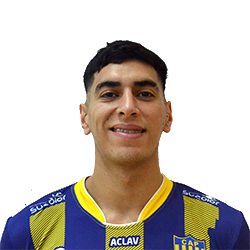

LIGA ARGENTINA
VOLEIBOL
LISTA DE JUGADORES DE PARACAO
| Nombre | Nº | Apellido y Nombre | Posicion | Fecha de Nacimiento | Altura |
|---|---|---|---|---|---|
| 1 | Hernández Facundo | Central | 23-06-2002 | 185 cm | |
|  | 2 | Pereyra Juan Pablo | Punta Receptor | 18-09-2000 | 190 cm |
| 3 | Gómez Leandro Javier | Libero | 29-12-2001 | 185 cm | |

|
4 | Albornoz Bruno | Armador | 27-12-2006 | 195 cm |
|
|
5 | Sesa David Oscar | Punta Receptor | 14-10-2003 | 190 cm |
|
|
6 | Nadalín Facundo | Opuesto | 30-05-2006 | 195 cm |